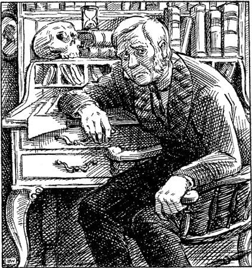

6
Listen to Part 1:

Tiến sĩ Lanyon
Ông Utterson nói với cảnh sát rằng Edward Hyde đang đến Dover. Ông nói với họ rằng Hyde sẽ đến Pháp. Nhưng cảnh sát không bắt được Edward Hyde.
Ba tháng trôi qua. Những người bạn của ngài Danvers Carew – người bị sát hại – đã đưa ra phần thưởng. Họ sẽ trao một nghìn bảng đổi lấy thông tin về vụ án mạng. Nhưng không ai nhìn thấy Edward Hyde kể từ đêm vụ án mạng xảy ra.
Utterson đã gặp tiến sĩ Jekyll vào Năm Mới. Tiến sĩ Jekyll trông có vẻ hạnh phúc, mặc dù khuôn mặt ông vẫn rất xanh xao. Ông ấy đã tổ chức một bữa tiệc tối vào ngày 8 tháng Giêng cho tất cả bạn bè của mình. Ông ấy đã mời tiến sĩ Lanyon cũng như Utterson và một số người khác. Tất cả các vị khách đều rất vui vẻ và Jekyll đã nói chuyện và cười đùa. Có lẽ ông đã quên Edward Hyde và vụ sát hại ngài Danvers Carew? Utterson rất vui khi thấy bạn mình đã vui vẻ trở lại.
Nhưng niềm vui đó không kéo dài. Bốn ngày sau, vào ngày 12 tháng Giêng, Utterson đã đến thăm nhà của tiến sĩ Jekyll. Poole, người hầu, đã mở cửa.
‘Tôi rất tiếc thưa ông Utterson,’ Poole nói, ‘nhưng tiến sĩ Jekyll sẽ không gặp bất kỳ ai.’
‘Ông ấy bị ốm sao?’ Utterson hỏi.
‘Ông ấy đang làm việc rất chăm chỉ,’ Poole nói. ‘Ông ấy đã chuyển đến phòng thí nghiệm. Ông ấy ăn và ngủ ở đó luôn. Tôi để đồ ăn của ông ấy bên ngoài cửa.’
Utterson rất lo lắng. Ông ấy rời khỏi nhà tiến sĩ Jekyll và đi bộ đến quảng trường Cavendish. Ông muốn nói chuyện với tiến sĩ Lanyon về Jekyll.
Lần cuối cùng ông nhìn thấy Lanyon, vào ngày 8 tháng Giêng, Lanyon trông rất khỏe mạnh. Bây giờ trông ông giống như một ông già. Ông ấy ốm và buồn.
Listen to Part 2:

‘Tôi không còn sống được bao lâu nữa,’ Lanyon nói. ‘Tôi đã rất sốc.’
Utterson không biết nói gì. Ông ấy không muốn tin rằng người bạn tốt của mình đang chết.
‘Tôi nghĩ Jekyll cũng bị ốm,’ Utterson nói. ‘Ông đã gặp ông ấy chưa?’
‘Tôi sẽ không bao giờ muốn gặp lại người đàn ông đó nữa,’ tiến sĩ Lanyon nói.
‘Hãy hỏi Jekyll,’ Lanyon nói.
‘Ông ấy sẽ không gặp tôi.’
‘Tôi không ngạc nhiên. Bây giờ, xin hãy để tôi yên. Tôi ốm và mệt rồi. Tạm biệt.’
Utterson rời khỏi nhà của tiến sĩ Lanyon và về nhà. Ông rất lo lắng. Ông ngồi xuống và viết một bức thư cho tiến sĩ Jekyll.
Listen to Part 3:
Thưa Jekyll
Ông luôn bận rộn mỗi khi tôi đến nhà ông. Ông có biết Lanyon bị bệnh không? Ông đã gặp ông ấy chưa? Tôi muốn đến thăm ông và nói chuyện với ông. Xin hãy cho tôi biết khi nào tôi có thể đến.
Utterson
Tiến sĩ Jekyll đã trả lời vào ngày hôm sau.
Utterson thân mến của tôi
Tôi rất tiếc khi nghe tin Lanyon bị ốm. Ông ấy và tôi đã có một bất đồng.
Lanyon là một ông già. Ông ấy không muốn tin vào những ý tưởng mới. Ông ấy không tin vào công trình khoa học của tôi. Ông ấy không tin rằng công trình của tôi đã thành công. Nhưng tôi đã chứng minh cho ông ấy thấy rằng nó đã thành công. Ông ấy đã tức giận. Ông ấy bảo tôi rời khỏi nhà ông ấy và không bao giờ quay lại.
Ông và tôi là bạn, nhưng xin đừng cố gắng đến thăm tôi. Tôi rất bận. Công trình khoa học của tôi đang chiếm hết thời gian của tôi.
Bạn của anh
Henry Jekyll
Listen to Part 4:
Một tuần sau, tiến sĩ Lanyon qua đời. Utterson đã đến đám tang của ông ấy và nhìn thấy nhiều bạn bè, nhưng Henry Jekyll không có ở đó.
Utterson là luật sư của tiến sĩ Lanyon. Ông ấy đã chăm sóc di chúc của tiến sĩ Lanyon. Tiến sĩ Lanyon đã để lại toàn bộ tài sản của mình cho người thân. Sau đó, Utterson lấy ra tất cả các giấy tờ riêng tư mà Lanyon đã để lại trong bàn làm việc của mình. Cùng với những tờ giấy đó có một phong bì ghi: Riêng tư. Dành cho J. G. Utterson.
Ông ấy mở phong bì ra. Bên trong là một phong bì thứ hai có ghi: Hãy đọc thư này sau khi tiến sĩ Henry Jekyll qua đời.
Utterson rất ngạc nhiên. Ông tự hỏi trong phong bì đó có gì. Nhưng ông ấy đã không mở nó ra. Ông ấy cất phong bì vào két sắt trong văn phòng của mình.